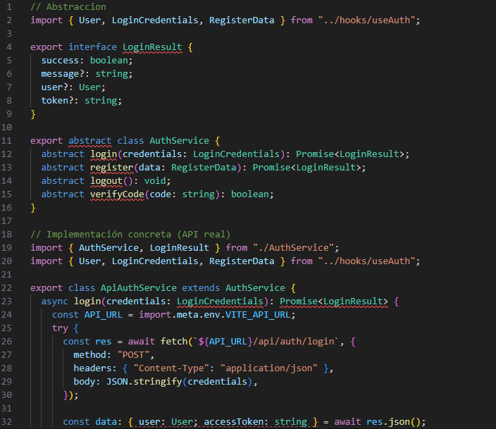
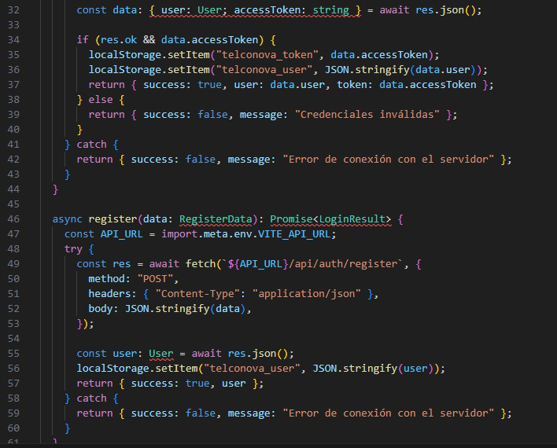
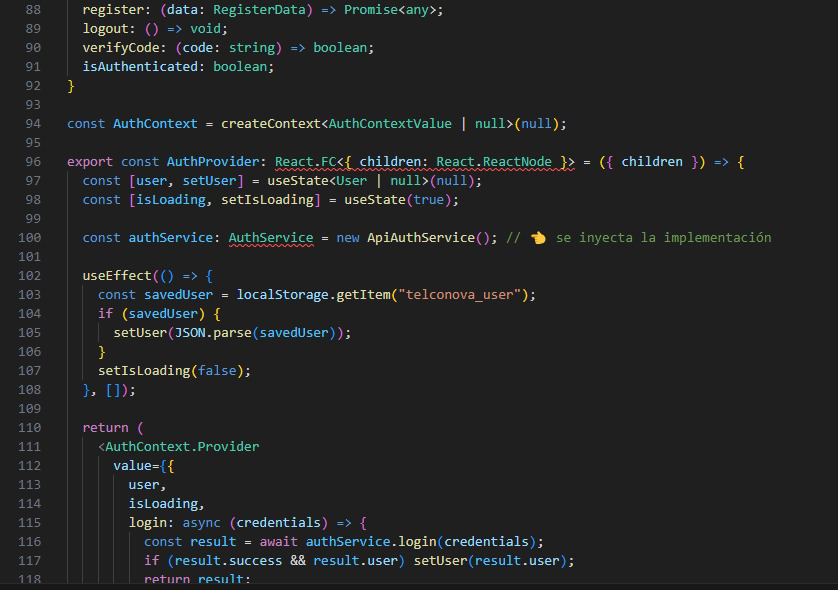
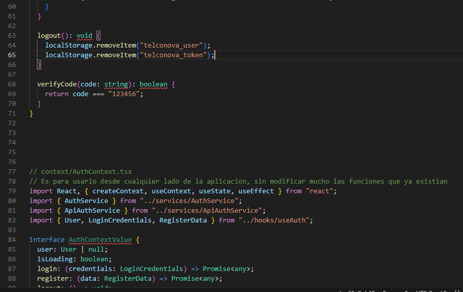
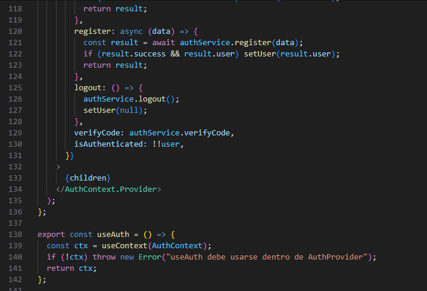

<!DOCTYPE html>
<html lang="es">
<head>
    <meta charset="UTF-8">
    <meta name="viewport" content="width=device-width, initial-scale=1.0">
    <title>SOLID - Dependency Inversion Principle</title>
    <script crossorigin src="https://unpkg.com/react@18/umd/react.production.min.js"></script>
    <script crossorigin src="https://unpkg.com/react-dom@18/umd/react-dom.production.min.js"></script>
    <script src="https://unpkg.com/@babel/standalone/babel.min.js"></script>
    <script src="https://cdn.tailwindcss.com"></script>
</head>
<body>
    <div id="root"></div>

    <script type="text/babel">
        const { useState } = React;

        const ChevronLeft = () => (
            <svg width="20" height="20" viewBox="0 0 24 24" fill="none" stroke="currentColor" strokeWidth="2">
                <polyline points="15 18 9 12 15 6"></polyline>
            </svg>
        );

        const ChevronRight = () => (
            <svg width="20" height="20" viewBox="0 0 24 24" fill="none" stroke="currentColor" strokeWidth="2">
                <polyline points="9 18 15 12 9 6"></polyline>
            </svg>
        );

        const DIPPresentation = () => {
            const [currentSlide, setCurrentSlide] = useState(0);

            const slides = [
                // Slide 1: Portada
                {
                    title: "Dependency Inversion Principle (DIP)",
                    subtitle: "Principio de Inversión de Dependencias",
                    content: (
                        <div className="flex flex-col items-center justify-center h-full space-y-8">
                            <div className="text-6xl font-bold text-blue-600">SOLID</div>
                            <div className="text-4xl font-semibold text-gray-800">Dependency Inversion Principle</div>
                            <div className="mt-12 p-6 bg-gray-100 rounded-lg">
                                <p className="text-xl text-gray-700 mb-4">Integrantes:</p>
                                <p className="text-lg text-gray-600">Felipe Mendoza Pelaez</p>
                                <p className="text-lg text-gray-600">Michael Stiven Tabares Tobon</p>
                                <p className="text-lg text-gray-600">Maria Fernanda Atencia Oliva</p>
                                <p className="text-lg text-gray-600">Juan David Urrea Garces</p>
                            </div>
                        </div>
                    )
                },
                // Slide 2: Definición
                {
                    title: "¿Qué es el Principio de Inversión de Dependencias?",
                    content: (
                        <div className="space-y-6">
                            <div className="bg-blue-50 p-6 rounded-lg border-l-4 border-blue-600">
                                <p className="text-xl font-semibold text-gray-800 mb-4">Definición:</p>
                                <p className="text-lg text-gray-700 leading-relaxed">
                                    "Los módulos de alto nivel no deben depender de módulos de bajo nivel. 
                                    Ambos deben depender de abstracciones."
                                </p>
                                <p className="text-lg text-gray-700 leading-relaxed mt-2">
                                    "Las abstracciones no deben depender de los detalles. 
                                    Los detalles deben depender de las abstracciones."
                                </p>
                            </div>
                            
                            <div className="grid grid-cols-2 gap-6 mt-8">
                                <div className="bg-red-50 p-4 rounded-lg">
                                    <p className="font-semibold text-red-700 mb-2">❌ Sin DIP:</p>
                                    <p className="text-gray-700">Clase concreta → Clase concreta</p>
                                    <p className="text-sm text-gray-600 mt-2">Alto acoplamiento</p>
                                </div>
                                <div className="bg-green-50 p-4 rounded-lg">
                                    <p className="font-semibold text-green-700 mb-2">✅ Con DIP:</p>
                                    <p className="text-gray-700">Clase concreta → Abstracción ← Clase concreta</p>
                                    <p className="text-sm text-gray-600 mt-2">Bajo acoplamiento</p>
                                </div>
                            </div>
                        </div>
                    )
                },
                // Slide 3: Ejemplo del implementación SIN aplicar el principio
                {
                    title: "Ejemplo del implementación SIN aplicar DIP",
                    content: (
                        <div className="space-y-4">
                            <div className="bg-red-50 p-4 rounded-lg border-l-4 border-red-600">
                                <p className="text-lg font-semibold text-red-700">❌ Problema: Alto acoplamiento</p>
                            </div>
                            
                            <pre className="bg-gray-900 text-gray-100 p-4 rounded-lg overflow-x-auto text-sm">
{`// Clase de bajo nivel - Implementación concreta
class MySQLDatabase {
    connect() {
        console.log("Conectando a MySQL...");
    }
    
    saveData(data) {
        console.log("Guardando en MySQL:", data);
    }
}

// Clase de alto nivel - Depende directamente de MySQL
class UserService {
    constructor() {
        this.database = new MySQLDatabase(); // ❌ Dependencia directa
    }
    
    saveUser(user) {
        this.database.connect();
        this.database.saveData(user);
    }
}

// Uso
const userService = new UserService();
userService.saveUser({ name: "Juan", email: "juan@email.com" });`}
                            </pre>
                            
                            <div className="bg-yellow-50 p-3 rounded-lg">
                                <p className="text-sm text-gray-700">
                                    <strong>Problema:</strong> Si queremos cambiar a PostgreSQL o MongoDB, 
                                    debemos modificar la clase UserService. Difícil de testear.
                                </p>
                            </div>
                        </div>
                    )
                },
                // Slide 4: Ejemplo del implementación CON el principio aplicado
                {
                    title: "Ejemplo del implementación CON DIP aplicado",
                    content: (
                        <div className="space-y-4">
                            <div className="bg-green-50 p-4 rounded-lg border-l-4 border-green-600">
                                <p className="text-lg font-semibold text-green-700">✅ Solución: Inversión de dependencias</p>
                            </div>
                            
                            <pre className="bg-gray-900 text-gray-100 p-4 rounded-lg overflow-x-auto text-sm">
{`// Abstracción (Interface)
class Database {
    connect() { throw new Error("Método no implementado"); }
    saveData(data) { throw new Error("Método no implementado"); }
}

// Implementaciones concretas
class MySQLDatabase extends Database {
    connect() { console.log("Conectando a MySQL..."); }
    saveData(data) { console.log("Guardando en MySQL:", data); }
}

class MongoDBDatabase extends Database {
    connect() { console.log("Conectando a MongoDB..."); }
    saveData(data) { console.log("Guardando en MongoDB:", data); }
}

// Clase de alto nivel - Depende de la abstracción
class UserService {
    constructor(database) { // ✅ Inyección de dependencia
        this.database = database;
    }
    
    saveUser(user) {
        this.database.connect();
        this.database.saveData(user);
    }
}

// Uso - Flexible y desacoplado
const mysqlDB = new MySQLDatabase();
const userService = new UserService(mysqlDB); // Inyectamos la dependencia
userService.saveUser({ name: "Juan" });`}
                            </pre>
                        </div>
                    )
                },
                // Slide 5: Imagen 1
                {
                    title: "Ejemplo del implementación en el Frontend 1",
                    content: (
                        <div className="flex flex-col items-center justify-center h-full space-y-6">
                            <div className="bg-gray-100 border-4 border-dashed border-gray-400 rounded-lg p-8 w-full max-w-4xl flex items-center justify-center min-h-[500px]">
                                 {
                                        e.target.style.display = 'none';
                                        e.target.nextSibling.style.display = 'block';
                                    }}
                                />
                                <div className="text-center text-gray-500 hidden">
                                    <p className="text-xl mb-2">📁 imagen1.png</p>
                                    <p className="text-sm">Coloca tu imagen en la misma carpeta que el HTML</p>
                                </div>
                            </div>
                            <p className="text-gray-600 text-center italic">Descripción de la imagen 1</p>
                        </div>
                    )
                },
                // Slide 6: Imagen 2
                {
                    title: "Ejemplo del implementación en el Frontend 2",
                    content: (
                        <div className="flex flex-col items-center justify-center h-full space-y-6">
                            <div className="bg-gray-100 border-4 border-dashed border-gray-400 rounded-lg p-8 w-full max-w-4xl flex items-center justify-center min-h-[500px]">
                                 {
                                        e.target.style.display = 'none';
                                        e.target.nextSibling.style.display = 'block';
                                    }}
                                />
                                <div className="text-center text-gray-500 hidden">
                                    <p className="text-xl mb-2">📁 imagen2.png</p>
                                    <p className="text-sm">Coloca tu imagen en la misma carpeta que el HTML</p>
                                </div>
                            </div>
                            <p className="text-gray-600 text-center italic">Descripción de la imagen 2</p>
                        </div>
                    )
                },
                // Slide 7: Imagen 3
                {
                    title: "Ejemplo del implementación en el Frontend 3",
                    content: (
                        <div className="flex flex-col items-center justify-center h-full space-y-6">
                            <div className="bg-gray-100 border-4 border-dashed border-gray-400 rounded-lg p-8 w-full max-w-4xl flex items-center justify-center min-h-[500px]">
                                 {
                                        e.target.style.display = 'none';
                                        e.target.nextSibling.style.display = 'block';
                                    }}
                                />
                                <div className="text-center text-gray-500 hidden">
                                    <p className="text-xl mb-2">📁 imagen3.png</p>
                                    <p className="text-sm">Coloca tu imagen en la misma carpeta que el HTML</p>
                                </div>
                            </div>
                            <p className="text-gray-600 text-center italic">Descripción de la imagen 3</p>
                        </div>
                    )
                },
                // Slide 8: Imagen 4
                {
                    title: "Ejemplo del implementación en el Frontend 4",
                    content: (
                        <div className="flex flex-col items-center justify-center h-full space-y-6">
                            <div className="bg-gray-100 border-4 border-dashed border-gray-400 rounded-lg p-8 w-full max-w-4xl flex items-center justify-center min-h-[500px]">
                                 {
                                        e.target.style.display = 'none';
                                        e.target.nextSibling.style.display = 'block';
                                    }}
                                />
                                <div className="text-center text-gray-500 hidden">
                                    <p className="text-xl mb-2">📁 imagen4.png</p>
                                    <p className="text-sm">Coloca tu imagen en la misma carpeta que el HTML</p>
                                </div>
                            </div>
                            <p className="text-gray-600 text-center italic">Descripción de la imagen 4</p>
                        </div>
                    )
                },
                // Slide 9: Imagen 5
                {
                    title: "Ejemplo del implementación en el Frontend 5",
                    content: (
                        <div className="flex flex-col items-center justify-center h-full space-y-6">
                            <div className="bg-gray-100 border-4 border-dashed border-gray-400 rounded-lg p-8 w-full max-w-4xl flex items-center justify-center min-h-[500px]">
                                 {
                                        e.target.style.display = 'none';
                                        e.target.nextSibling.style.display = 'block';
                                    }}
                                />
                                <div className="text-center text-gray-500 hidden">
                                    <p className="text-xl mb-2">📁 imagen5.png</p>
                                    <p className="text-sm">Coloca tu imagen en la misma carpeta que el HTML</p>
                                </div>
                            </div>
                            <p className="text-gray-600 text-center italic">Descripción de la imagen 5</p>
                        </div>
                    )
                },
                // Slide 10: Ventajas y Desventajas
                {
                    title: "Ventajas y Desventajas",
                    content: (
                        <div className="grid grid-cols-2 gap-6">
                            <div className="space-y-4">
                                <h3 className="text-2xl font-bold text-green-600 mb-4">✅ Ventajas</h3>
                                
                                <div className="bg-green-50 p-4 rounded-lg">
                                    <p className="font-semibold text-gray-800 mb-2">Bajo acoplamiento</p>
                                    <p className="text-sm text-gray-600">
                                        Las clases no dependen de implementaciones concretas
                                    </p>
                                </div>
                                
                                <div className="bg-green-50 p-4 rounded-lg">
                                    <p className="font-semibold text-gray-800 mb-2">Fácil de testear</p>
                                    <p className="text-sm text-gray-600">
                                        Podemos usar mocks e inyectar dependencias falsas
                                    </p>
                                </div>
                                
                                <div className="bg-green-50 p-4 rounded-lg">
                                    <p className="font-semibold text-gray-800 mb-2">Flexibilidad</p>
                                    <p className="text-sm text-gray-600">
                                        Cambiar implementaciones sin modificar el código existente
                                    </p>
                                </div>
                                
                                <div className="bg-green-50 p-4 rounded-lg">
                                    <p className="font-semibold text-gray-800 mb-2">Reutilización</p>
                                    <p className="text-sm text-gray-600">
                                        Las abstracciones pueden usarse en múltiples contextos
                                    </p>
                                </div>
                            </div>
                            
                            <div className="space-y-4">
                                <h3 className="text-2xl font-bold text-red-600 mb-4">❌ Desventajas</h3>
                                
                                <div className="bg-red-50 p-4 rounded-lg">
                                    <p className="font-semibold text-gray-800 mb-2">Mayor complejidad inicial</p>
                                    <p className="text-sm text-gray-600">
                                        Requiere crear interfaces y abstracciones adicionales
                                    </p>
                                </div>
                                
                                <div className="bg-red-50 p-4 rounded-lg">
                                    <p className="font-semibold text-gray-800 mb-2">Más código</p>
                                    <p className="text-sm text-gray-600">
                                        Aumenta la cantidad de archivos y clases en el proyecto
                                    </p>
                                </div>
                                
                                <div className="bg-red-50 p-4 rounded-lg">
                                    <p className="font-semibold text-gray-800 mb-2">Curva de aprendizaje</p>
                                    <p className="text-sm text-gray-600">
                                        Puede ser difícil de entender para principiantes
                                    </p>
                                </div>
                                
                                <div className="bg-red-50 p-4 rounded-lg">
                                    <p className="font-semibold text-gray-800 mb-2">Sobreingeniería</p>
                                    <p className="text-sm text-gray-600">
                                        En proyectos pequeños puede ser innecesario
                                    </p>
                                </div>
                            </div>
                        </div>
                    )
                },
                // Slide 11: Conclusión
                {
                    title: "Conclusión",
                    content: (
                        <div className="flex flex-col items-center justify-center h-full space-y-8">
                            <div className="text-4xl font-bold text-blue-600">Dependency Inversion Principle</div>
                            
                            <div className="bg-blue-50 p-8 rounded-lg max-w-3xl">
                                <p className="text-xl text-gray-800 leading-relaxed text-center">
                                    El DIP nos ayuda a crear código más flexible, mantenible y testeable al 
                                    invertir las dependencias tradicionales y hacer que tanto módulos de alto 
                                    como de bajo nivel dependan de abstracciones.
                                </p>
                            </div>
                            
                            <div className="bg-gradient-to-r from-blue-500 to-purple-600 text-white p-6 rounded-lg">
                                <p className="text-2xl font-semibold text-center">
                                    "Programa hacia interfaces, no hacia implementaciones"
                                </p>
                            </div>
                            
                            <div className="text-3xl font-bold text-gray-700 mt-8">
                                ¡Gracias por su atención!
                            </div>
                        </div>
                    )
                }
            ];

            const nextSlide = () => {
                setCurrentSlide((prev) => (prev + 1) % slides.length);
            };

            const prevSlide = () => {
                setCurrentSlide((prev) => (prev - 1 + slides.length) % slides.length);
            };

            return (
                <div className="w-full h-screen bg-gradient-to-br from-gray-50 to-gray-100 flex flex-col">
                    {/* Header */}
                    <div className="bg-white shadow-md p-4 flex justify-between items-center">
                        <div className="text-sm font-semibold text-gray-600">
                            SOLID Principles
                        </div>
                        <div className="text-sm text-gray-500">
                            Diapositiva {currentSlide + 1} de {slides.length}
                        </div>
                    </div>

                    {/* Slide Content */}
                    <div className="flex-1 p-8 overflow-auto">
                        <div className="max-w-6xl mx-auto bg-white rounded-xl shadow-lg p-8 min-h-full flex flex-col">
                            <h1 className="text-3xl font-bold text-gray-800 mb-6 border-b-4 border-blue-600 pb-3">
                                {slides[currentSlide].title}
                            </h1>
                            {slides[currentSlide].subtitle && (
                                <h2 className="text-xl text-gray-600 mb-6">
                                    {slides[currentSlide].subtitle}
                                </h2>
                            )}
                            <div className="mt-6 flex-1 overflow-auto">
                                {slides[currentSlide].content}
                            </div>
                        </div>
                    </div>

                    {/* Navigation */}
                    <div className="bg-white shadow-md p-4 flex justify-between items-center">
                        <button
                            onClick={prevSlide}
                            className="flex items-center gap-2 px-4 py-2 bg-blue-600 text-white rounded-lg hover:bg-blue-700 transition-colors disabled:bg-gray-300 disabled:cursor-not-allowed"
                            disabled={currentSlide === 0}
                        >
                            <ChevronLeft />
                            Anterior
                        </button>
                        
                        <div className="flex gap-2">
                            {slides.map((_, index) => (
                                <button
                                    key={index}
                                    onClick={() => setCurrentSlide(index)}
                                    className={`w-3 h-3 rounded-full transition-all ${
                                        index === currentSlide
                                            ? 'bg-blue-600 w-8'
                                            : 'bg-gray-300 hover:bg-gray-400'
                                    }`}
                                />
                            ))}
                        </div>

                        <button
                            onClick={nextSlide}
                            className="flex items-center gap-2 px-4 py-2 bg-blue-600 text-white rounded-lg hover:bg-blue-700 transition-colors disabled:bg-gray-300 disabled:cursor-not-allowed"
                            disabled={currentSlide === slides.length - 1}
                        >
                            Siguiente
                            <ChevronRight />
                        </button>
                    </div>
                </div>
            );
        };

        ReactDOM.render(<DIPPresentation />, document.getElementById('root'));
    </script>
</body>
</html>